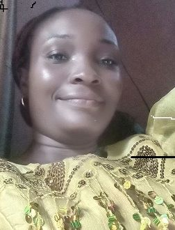

Gift Atako|WDD130
Greetings,i am from Nigeria/Rivers State.I am optimistic about life and i love learning, eating good food and conscious of my health.I truly want to learn and grow my self to support my family, friends and contribute to the society at large.I am married with three lovely kids(two boys and a girl). I am a member of the church of Jesus Christ of Latter Day saint and it has blessed my life.